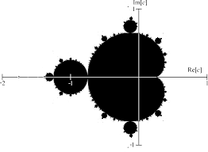
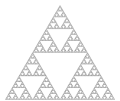
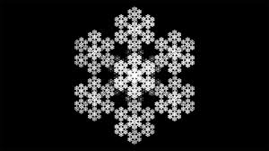
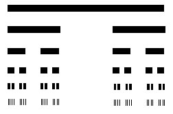

Explorando a beleza infinita da Matemática
Fractais são estruturas geométricas que apresentam auto-similaridade, ou seja, cada parte da figura é semelhante ao todo, mesmo quando ampliada. Este conceito tornou-se fundamental na matemática moderna.
Diferente das formas clássicas da geometria euclidiana, os fractais possuem detalhes infinitos e são geralmente criados através de processos iterativos baseados em fórmulas matemáticas.
Descoberto por Benoît Mandelbrot em 1980. Baseia-se na fórmula z = z² + c utilizando números complexos.
Quando ampliado, revela padrões infinitos e estruturas surpreendentemente detalhadas.

Criado por Wacław Sierpiński em 1915. Forma-se dividindo um triângulo equilátero em partes menores, removendo sempre o triângulo central.

Criado por Helge von Koch em 1904. A cada etapa são adicionadas novas pontas no meio de cada lado.
Possui perímetro infinito, mas área finita.

Criado por Georg Cantor em 1883. Remove-se infinitamente o terço central de um segmento.
Apesar de conter infinitos pontos, o comprimento total tende a zero.

A palavra "fractal" foi criada por Benoît Mandelbrot em 1975.
Árvores, rios, relâmpagos e montanhas seguem padrões fractais.
São usados em jogos e filmes para criar paisagens realistas.
O cérebro apresenta estruturas com características fractais.
Estudo de vasos sanguíneos e estruturas pulmonares.
Compressão de imagens e geração de gráficos digitais.
Modelação de montanhas, nuvens e costas marítimas.
Análise de padrões em mercados financeiros.
Assiste a este vídeo para compreender melhor o conceito de fractais:
Ver Vídeo no YouTube